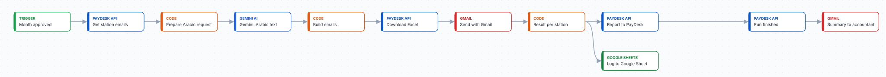

PayDesk: payroll that runs itself
My biggest project, built from a real problem at my own desk.
Drivers kept asking me "Why was my salary cut?" I had no answer, because I handle cash, not payroll. Salary emails to 50 stations also took 2 to 3 hours by hand.
A system where the computer does the payroll work: it sends the emails, explains every salary with AI, and checks that cash was really paid.
2 to 3 hours of work now takes about 1 minute. Drivers get answers in seconds, and paper signature sheets are no longer needed.

Station salary emails
When the month is approved, all 50 stations get their salary email with an Excel sheet, in English and Arabic. About 1 minute instead of 2 to 3 hours.
AI salary assistant
Staff ask on Telegram why their salary changed. The AI explains it line by line from their own payslip, and opens a case for payroll if something looks wrong.
Cash confirmations
No more paper signature sheets. After each cash payment, the person confirms on Telegram. If the amount is wrong, finance gets an alert within minutes.
How PayDesk works on its own
Each box below is one step the computer does by itself, and the arrows show the order. For example: the manager approves the month → the system gets the salary list → AI writes the Arabic text → 50 emails go out → everything is logged. These are my real workflows, built in n8n.

Scroll sideways to follow each flow from start to end.
My other projects
Each one started with a task that took too long by hand.
Invoice & Payment Autopilot
Problem: checking supplier invoices by hand is slow and mistakes are easy to miss.
What it does: AI reads each invoice from email, checks VAT, duplicates and the ZATCA QR code, asks the right manager to approve, and plans the weekly payments.

CODesk: cash and COD supervision
Problem: a supervisor has to check cash from many stations in many files.
What it does: one screen shows every station's cash and deposits, AI reads bank slips and receipts, and a daily report goes to the manager.
Power BI dashboards
Problem: managers get long spreadsheets but need quick answers.
What it does: clean dashboards show where the money comes from, which branches lead and how numbers change. They use real company data, so I show them in interviews.